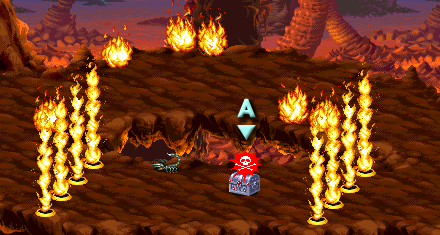

| STAGE 9-A Land of Fire |
| 화염의 대지 |
| (일어판 - 灼熱!! 鎔岩界 : 작열!! 용암계) |
이름 그대로 불길이 일렁이는 뜨거운 스테이지다.
이곳에서 유일하게 냉기의 검을 얻을 수 있다.
이곳에서 유일하게 냉기의 검을 얻을 수 있다.
전반부 |
이름에 걸맞게 스테이지가 전체적으로 붉은색이다.

두 갈래길로 나뉜다.
위쪽으로 가면 헬 하운드가 나온다. 1인일 경우 한마리, 2인 이상일 경우 두마리가 나온다.
ps.이곳의 헬 하운드는 유난히 콜드 로드나 불 내성의 반지를 잘 떨구는 편이다.
아래쪽의 불트랩은 자이언트 스콜피온을 제거시키면 사라진다.
라파엘의 동굴에서 언급했던 방법을 써도 되는데 화면을 스크롤 시키면 자이언트 스콜피온도 강제로 밀려나오기 때문에 위쪽으로 이동했다가 스테이지 시작지점으로 돌아가면 자이언트 스콜피온이 불트랩 가까이 붙어 있을 것이다. 바깥에서 공격하면 없앨 수 있다.
| 랜덤 아이템 | 고정 아이템 | 클래스별 아이템 | |||||||
|
|||||||||
| 드워프가 격파시 | |||||||||
게임 전체를 통틀어서 유일하게 이 상자에서 서리의 검이 나온다.
여기까지 오면 화면이 더이상 스크롤 되지 않는다.
상자 주위에 고블린 네마리가 있는데 스테이지 진행과는 상관이 없다.
한마리씩 꼬드겨서 왼쪽으로 끌고가서 처리 한 다음 오는 것도 괜찮다.
상자 B
| 랜덤 아이템 | 고정 아이템 | 클래스별 아이템 | |||||||
|
|||||||||
| 드워프가 격파시 | |||||||||
등장하는 적 - 약 53초가 지나면 도망간다. 전부 물리치거나 도망쳐야 다음으로 진행할 수 있다.
| 1인 | 왼쪽에서 고블린 x1 → 제거하면 왼쪽에서 헬 하운드 x1 + 오른쪽에서 헬 하운드 x1 → 왼쪽에서 오일던지는 고블린 x3 → 왼쪽에서 헬 하운드 x1 + 오른쪽에서 헬 하운드 x1 → 한마리를 제거하면 오른쪽에서 오일던지는 고블린 x3 → 한마리만 남으면 왼쪽에서 오일던지는 고블린 x3 + 한마리를 제거하면 오른쪽에서 오일던지는 고블린 x3 |
| 2인 | 1인 플레이와 똑같다. |
| 3인 | 왼쪽에서 고블린 x1 → 제거하면 왼쪽에서 헬 하운드 x2 + 오른쪽에서 헬 하운드 x1 → 왼쪽에서 오일던지는 고블린 x3 → 왼쪽에서 헬 하운드 x1 + 오른쪽에서 헬 하운드 x2 → 한마리를 제거하면 오른쪽에서 오일던지는 고블린 x3 → 한마리만 남으면 왼쪽에서 오일던지는 고블린 x3 + 한마리를 제거하면 오른쪽에서 오일던지는 고블린 x3 |
| 4인 | 3인 플레이와 똑같다. |
※ 상자 주위의 고블린은 제외
후반부 |
역시 두 갈래길로 나뉜다.
* 팻말에 적혀 있는 내용 *
Keeping Going. Don't turn back.
계속 가라. 돌아오지 마라.
위쪽으로 가면 헬 하운드 두마리가 나온다. 전진할 때마다 한마리씩 뛰쳐나온다.
동그랗게 생긴 구멍은 밟으면 터지는 트랩이다. 바로 터지는건 이나고 잠시 깜빡이다가
터진다. 아래쪽의 불장벽 트랩은 전반부와 같은 방식으로 처리하면 된다.
물론 불 내성의 반지가 있다면 전혀 신경쓰지 않아도 된다.
| 랜덤 아이템 | 고정 아이템 | 클래스별 아이템 | |||||||
|
|||||||||
| 드워프가 격파시 | |||||||||
마지막 부분에 헬 하운드 두마리가 서성거리고 있다.
불 내성의 반지가 아직 없다면 마지막으로 이녀석들 한테서 나오길 기대 해 봐야 할 것이다.
|
보스도 역시 뜨거운 몬스터가 등장한다.
상자 D는 2인 이상 플레이시에만 등장한다.
상자 D - 2인 이상 플레이시에만 등장한다.
| 랜덤 아이템 | 고정 아이템 | 클래스별 아이템 | |||||||
|
|||||||||
| 드워프가 격파시 | |||||||||
상자 E
| 랜덤 아이템 | 고정 아이템 | 클래스별 아이템 | |||||||
|
|||||||||
| 드워프가 격파시 | |||||||||
간단한 공략 - 자세한 공략은 보스 공략을 보도록 한다. ▶ 보스 공략 보기
몸체와 꼬리에 닿기만 해도 불타면서 쓰러진다. 몸통에 닿는건 불 내성의 반지가 있다해도 소용없다. 그래도 불 내성의 반지가 있으면 기타 불공격과 꼬리에 닿아도 불타오르지 않으니 꼭 필요하다. 그런데 문제는 시프를 제외하면 고정적으로 나오지 않는다는 점이다. 없다면 꽤나 고생 할 수 밖에 없다.
화염의 검, 폭풍의 검, 냉기의 검으로 공격하면 한번에 쓰러지며 계속해서 공격할 수 있다. 그러니 따로 챙겨둔게 없으면 이 스테이지에서 나오는 냉기의 검을 꼭 챙겨두도록 한다. 헬 하운드가 뒤에서 브레쓰를 내뿜으며 방해를 할텐데 불 내성의 반지가 있으면 무시해도 되지만 만약 없다면 헬 하운드도 구석으로 몰아넣고 같이 공격하는게 좋을 것 이다.
파이터, 시프, 드워프, 엘프는 냉기의 검으로 공격하면 되니 크게 문제될 것은 없다.
드워프의 경우 공격속도가 느려서 샐러맨더가 쓰러졌다가 일어날 때 당할 수 있으니 최대한 빨리 공격해야 될 것이다.
문제가 되는 것은 매직 유저와 클레릭이다.
매직 유저는 라이트닝 완드와 콜드 완드를 이용해서 최대한 데미지를 입히는게 좋다. 아이스 스톰의 경우 플레임 샐러맨더에 한하여 데미지가 1.5배 증가하니 적극 활용 해 주도록 한다.
클레릭은 마땅한 마법도구나 무기가 없어서 고생할 수 밖에 없다. 스트라이킹, 블레스를 걸어두고 열심히 때리고 HP피해를 입으면 CSW, CCW로 회복하는 단순무식한 방법을 써야 한다.
다른 방법도 있긴 하니 보스 공략을 참조하도록 한다.
화염의 검을 제외한 모든 불의 속성을 지닌 주문/아이템과 클라우드 킬에 대해 면역성을 가지고 있다는 사실도 기억하도록 한다.
몸체와 꼬리에 닿기만 해도 불타면서 쓰러진다. 몸통에 닿는건 불 내성의 반지가 있다해도 소용없다. 그래도 불 내성의 반지가 있으면 기타 불공격과 꼬리에 닿아도 불타오르지 않으니 꼭 필요하다. 그런데 문제는 시프를 제외하면 고정적으로 나오지 않는다는 점이다. 없다면 꽤나 고생 할 수 밖에 없다.
화염의 검, 폭풍의 검, 냉기의 검으로 공격하면 한번에 쓰러지며 계속해서 공격할 수 있다. 그러니 따로 챙겨둔게 없으면 이 스테이지에서 나오는 냉기의 검을 꼭 챙겨두도록 한다. 헬 하운드가 뒤에서 브레쓰를 내뿜으며 방해를 할텐데 불 내성의 반지가 있으면 무시해도 되지만 만약 없다면 헬 하운드도 구석으로 몰아넣고 같이 공격하는게 좋을 것 이다.
파이터, 시프, 드워프, 엘프는 냉기의 검으로 공격하면 되니 크게 문제될 것은 없다.
드워프의 경우 공격속도가 느려서 샐러맨더가 쓰러졌다가 일어날 때 당할 수 있으니 최대한 빨리 공격해야 될 것이다.
문제가 되는 것은 매직 유저와 클레릭이다.
매직 유저는 라이트닝 완드와 콜드 완드를 이용해서 최대한 데미지를 입히는게 좋다. 아이스 스톰의 경우 플레임 샐러맨더에 한하여 데미지가 1.5배 증가하니 적극 활용 해 주도록 한다.
클레릭은 마땅한 마법도구나 무기가 없어서 고생할 수 밖에 없다. 스트라이킹, 블레스를 걸어두고 열심히 때리고 HP피해를 입으면 CSW, CCW로 회복하는 단순무식한 방법을 써야 한다.
다른 방법도 있긴 하니 보스 공략을 참조하도록 한다.
화염의 검을 제외한 모든 불의 속성을 지닌 주문/아이템과 클라우드 킬에 대해 면역성을 가지고 있다는 사실도 기억하도록 한다.
▶ 클리어 후 레벨이 올라가는 클래스 : 파이터, 클레릭, 시프
상점 |
레드 드래곤을 물리치고 나오는 상점 주인과 같은 인물일런지?
아이템 구입 가격
좀 더 자세한 정보는 상점 정보를 보기 바란다. ▶ 상점 정보 보기
Copyright ⓒ 2007-2008 Crassus & Legon. All rights reserved.